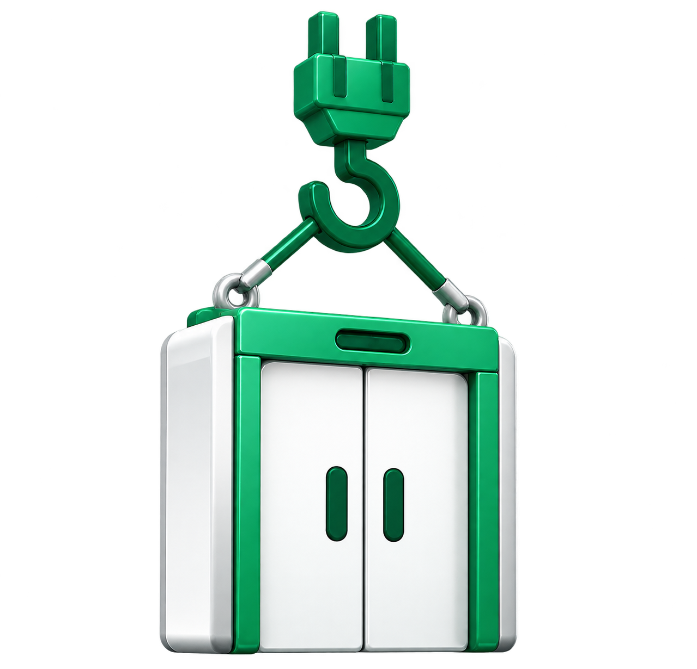
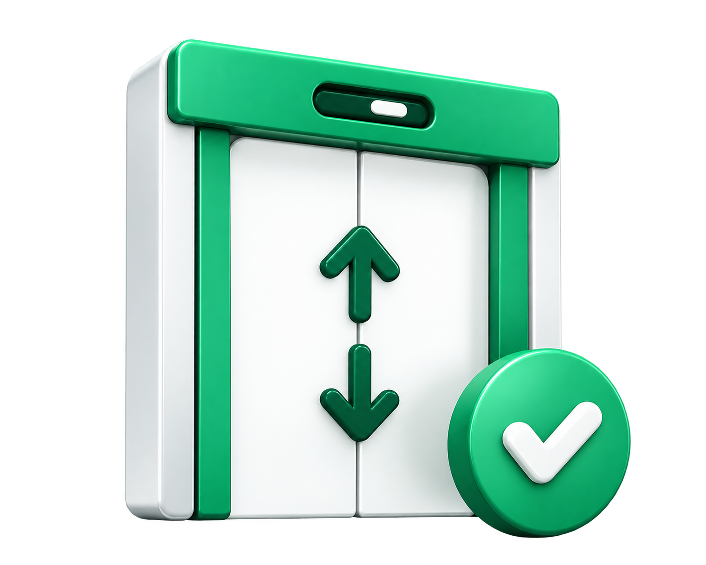

STEP 1
교체공사 절차
승강기 1대기준 제작기간은 사양 결정 후 30일)이며, 현장 철거, 설치와 시운전까지 20일 소요됩니다. 현장에 다수의 승강기가 있는 경우
처음 1대는 22일이 소요되고, 자체 검사 및 의겸 수렴 후 다음 작업을 시작하게 됩니다.(단 정부 검사는 별도 진행입니다.)
승강기 교체공사 기간

STEP 2
철거 및 양중 1일
STEP 3
성능 개선 공사11일

STEP 4
시운전 2일(기계 조정 포함)
STEP 5
1대당 공사기간 14일
※ 제작기간은 제외되며, 현장 여건 및
공사 범위에 따라 공사기간이
달라질 수 있습니다.